TasteCircle
TasteCircleSee what your circle is eating.
Post a live photo of your plate at the place you ate it. Your friends see it, you rank your spots, and there's a new food game every day.
Free on iPhone. 4.9 stars from 33 ratings. Made in Norman, Oklahoma.
Plates posted by members, as they appear in the app
10,000+ plates posted
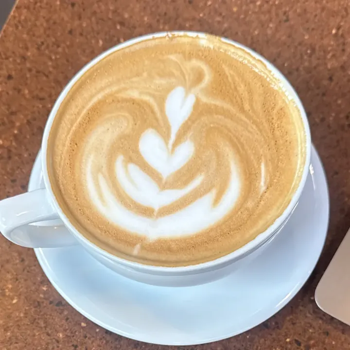
Cappuccinolucyoden · Yellow Dog Coffee Company 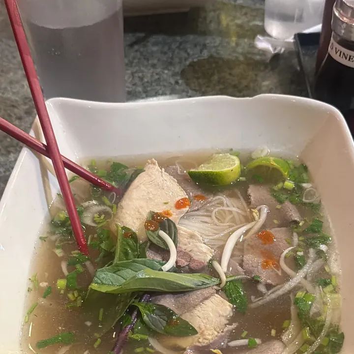
PhoCharlie Wolffe · Pho House 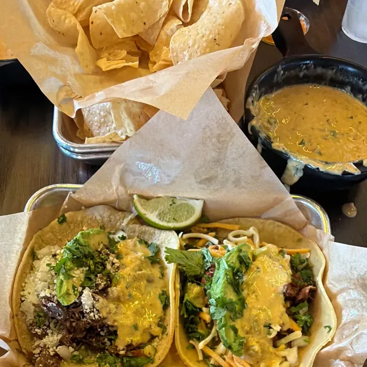
Tacos and quesoCharlie Wolffe · Torchy's Tacos 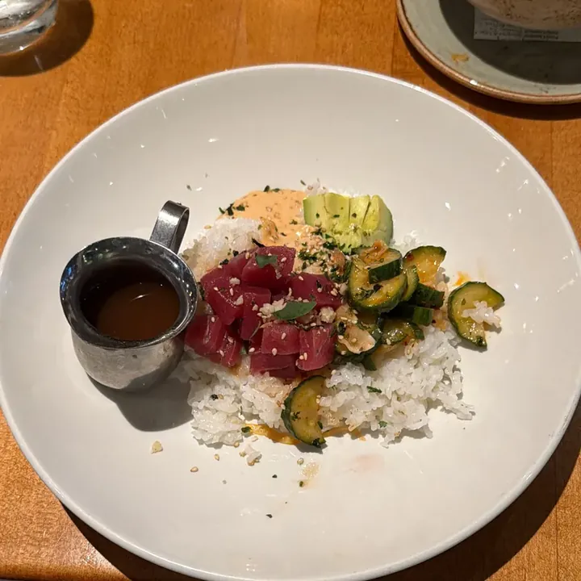
Ahi tuna pokecon god · The Greene House 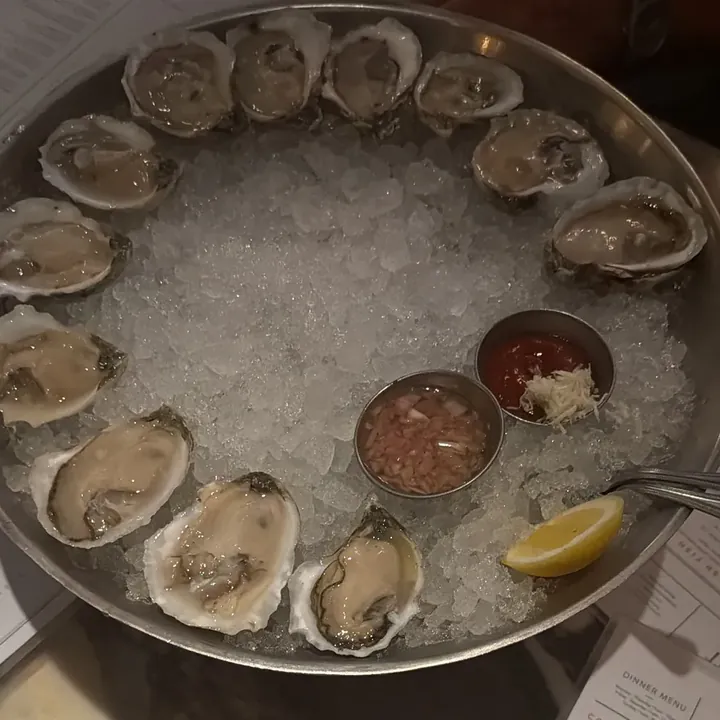
OystersGrant_Wainwright · Green Point Seafood and Oyster Bar 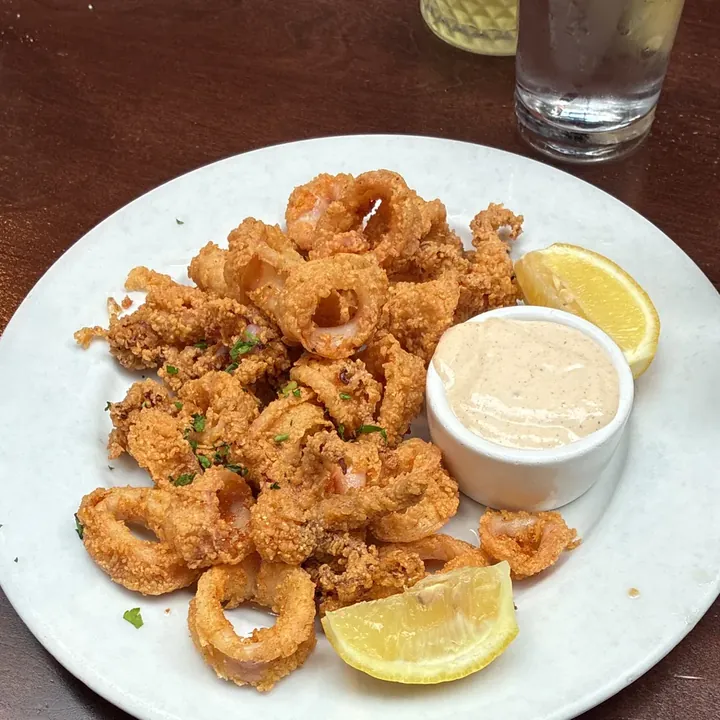
Calamarimattbyars · Perry's 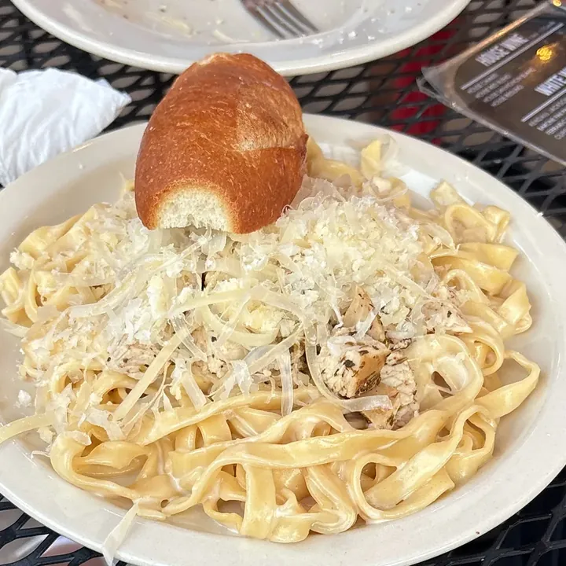
TagliatelleDrewEats · Victoria's The Pasta Shop 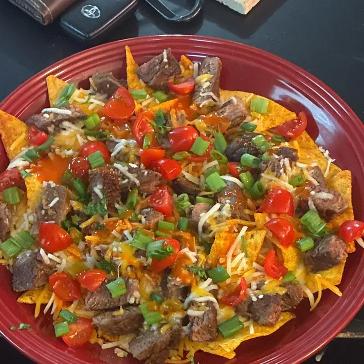
Steak nachosholdenbethel 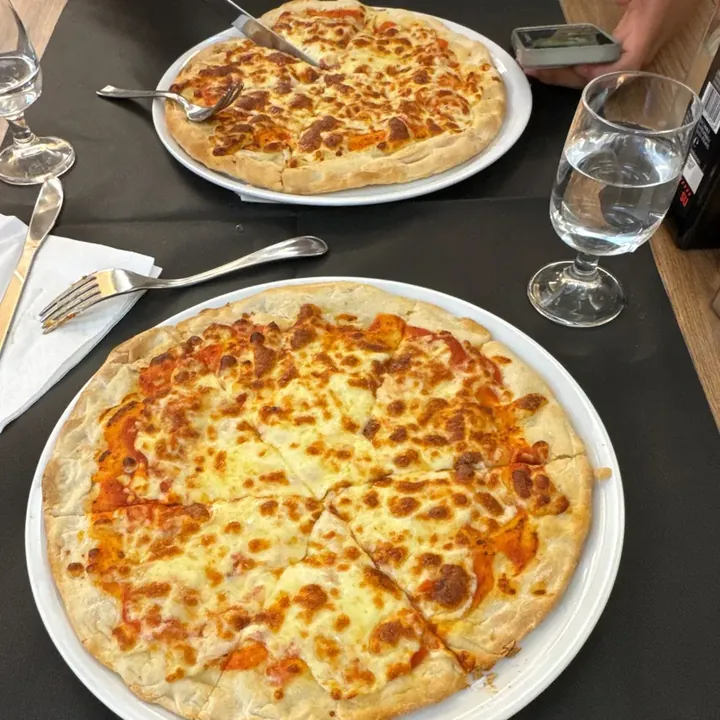
Margherita pizzajledezma06 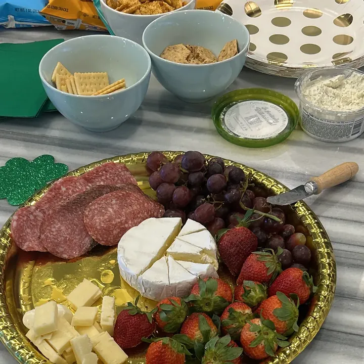
Charcuterie boardfaithtilley
How it works
-
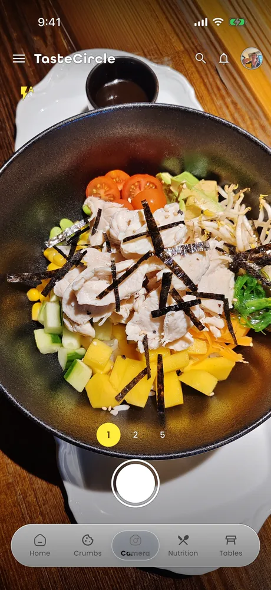
Snap your plate
One live photo, taken in the app at the place you're eating. Pick the spot, add a caption if you want one, post.
-
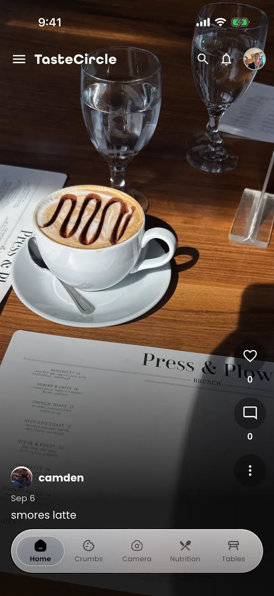
Your circle sees it
Your friends' plates land in one feed, with likes and comments. Friends are mutual: send a request, or scan each other's QR code in the app.
Plates from beyond your friends show up in Outer Circle.
-
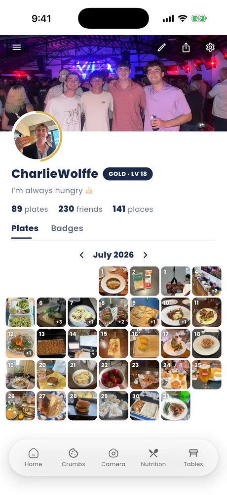
Rank your spots
Every place you post from goes on your profile. Put them in order in TC Ranked and pick up points each week.
A new food game every day
One puzzle each a day, the same for everyone, new at midnight Central.
Alphabet Soup
Guess the five-letter food word in six tries. Green: right spot. Gold: wrong spot.
Four Courses
Sixteen words, four groups of four, four mistakes allowed. Starter is the easiest. Dessert is the trick.
The Bite
A real plate posted by a member. Which of the four local spots is it from? Three guesses.
Meal of the Week
Each week a few plates make the finals, and the Circle votes on the winner.
Tables
A Table is a group with its own feed and chat. Start one, share the code, and everyone's plates land in one place. A house, a team, a club.
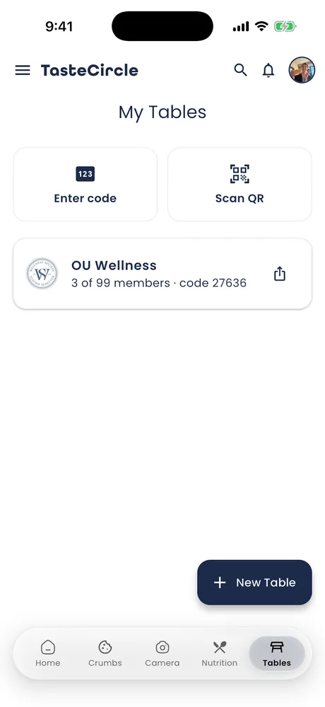
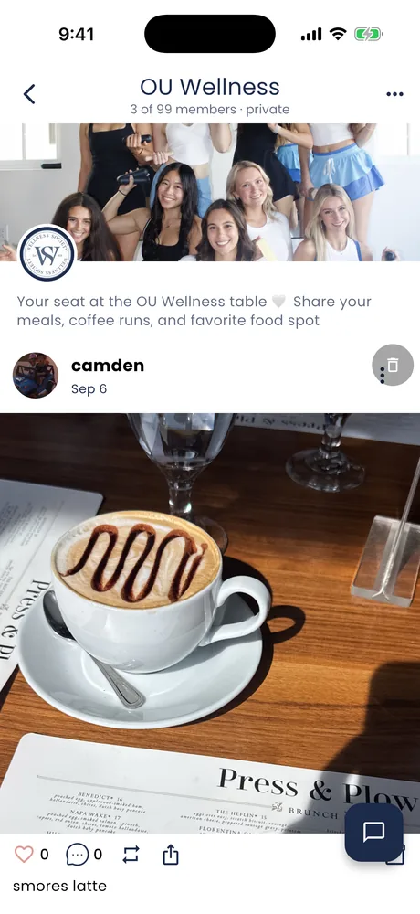
Crumbs
You earn Crumbs by posting real meals. That's the whole rule.
Nutrition, if you want it
A food diary with search and a barcode scanner. Optional, and private to you.
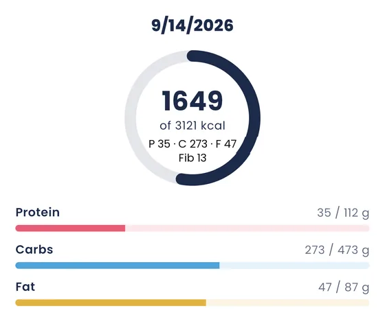
Your Spot
Run a restaurant in Norman? Members tag the place when they post, so 114 Norman spots already have a page full of plates. Claim yours. It's free.
Tell us about your spot Opens a short form. We read every one.Some of the spots in the feed above
- Yellow Dog Coffee Company
- Pho House
- Torchy's Tacos
- The Greene House
- Perry's
- Victoria's The Pasta Shop
- Oklahoma Memorial Union
- Green Point Seafood and Oyster Bar
Questions
Is it free?
Yes. No ads, no in-app purchases.
Is it on Android?
No. TasteCircle is an iPhone app.
Who can see my plates?
Your friends, and by default other TasteCircle members in the Outer Circle feed. The Private Posts setting keeps your plates to friends only.
How do I add friends?
Send a request and they accept, or scan each other's QR code in the app.
How old do I have to be?
16 or older.
Do I have to log nutrition?
No. It's optional, and your diary is private to you.
Something not working?
Email tastecirclemain@gmail.com, or see the support page.